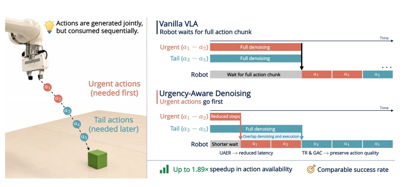
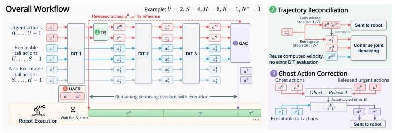
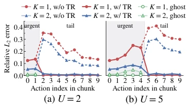
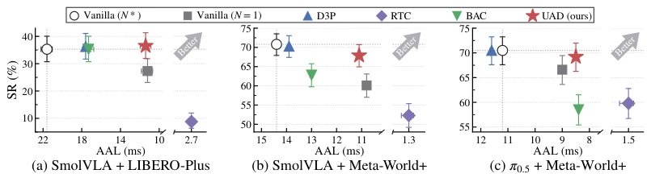
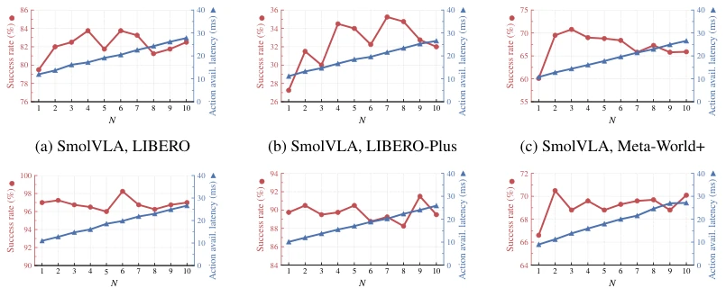
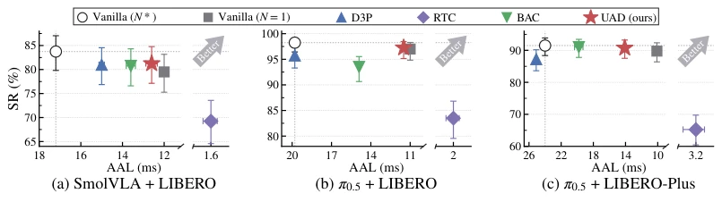
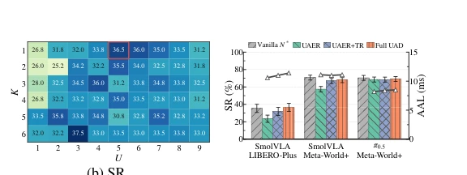
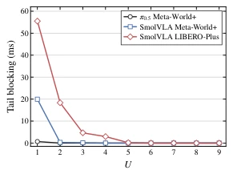
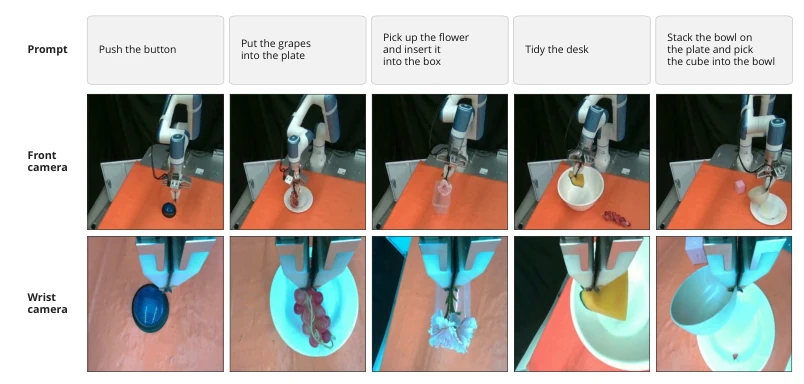

This paper casts a sobering reality check on the VLA acceleration field while simultaneously offering a viable path forward. When VLA models generate action chunks (action chunk), they typically treat the entire chunk as a single unit for refinement, whereas robot execution follows a "tight front, loose back" pattern. The UAD strategy of "urgent matters first" is ingenious, allowing front actions to skip steps, back actions to refine gradually, and compensating for errors via "ghost actions". However, this method relies heavily on flow-matching, and diffusion models may not be universally applicable. Moreover, the term "ghost" sounds esoteric, but it simply refers to unexecuted trajectories; do not be misled. It achieves nearly 2x speedup in simulation and maintains success rates on real hardware, serving as a shot of adrenaline for real-time control, yet whether computational overhead is truly negligible depends on specific deployment. Additionally, the GAC compensation strategy assumes action dimension additivity, which may fail for discrete actions; although mentioned in the text, risks remain in practice.
研究动机Motivation
现有 VLA 加速要么搞量化剪枝（Xu et al., 2026），要么像 RTC（Black et al., 2025）那样硬重叠。问题在于它们没看清物理现实：动作是联合生成的，但顺序执行的。前面的动作急着用，后面的能等。现有方法把 chunk 当铁板一块，导致要么慢，要么准度掉。比如 D3P（Yu et al., 2025）虽然动态选步数，但没利用 chunk 内部的时间不对称性。这种“一刀切”的预算分配，让机器人为了等后面的动作，白白浪费前面动作的等待时间，严重制约了实时性。BAC（Ji et al., 2026a）虽优化特征复用，但无法解决生成延迟。这种瓶颈在边缘设备上更明显，导致机器人频繁卡顿，无法流畅交互。
Existing VLA acceleration methods either employ quantization and pruning (Xu et al., 2026) or hard overlap like RTC (Black et al., 2025). The issue lies in their failure to recognize the physical reality: actions are jointly generated but sequentially executed. Front actions are urgently needed, while back actions can wait. Existing methods treat the chunk as a monolithic block, resulting in either slowness or accuracy degradation. For instance, D3P (Yu et al., 2025) dynamically selects step counts but fails to utilize the temporal asymmetry within the chunk. This "one-size-fits-all" budget allocation causes the robot to waste waiting time for front actions while waiting for back actions, severely constraining real-time performance. Although BAC (Ji et al., 2026a) optimizes feature reuse, it cannot resolve generation latency. This bottleneck is more pronounced on edge devices, causing frequent robot stuttering and preventing smooth interaction.

Figure 1: Illustration of Urgency-Aware Denoising (UAD). Insight: Actions are generated jointly but consumed sequentially, creating heterogeneous execution urgencies. Method: UAD releases urgent actions after fewer denoising steps and overlaps the remaining denoising with physical ex- ecution. Modules: Urgency-Aware Early Release (UAER) releases urgent actions early to reduce latency, Trajectory Reconciliation (TR) restores consistent joint denoising, and Ghost Action Cor- rection (GAC) compensates for early-release errors using ghost actions. Benefits: UAD reduces action availability latency while maintaining comparable task success rates.
The core is the UAD framework. Step 1 is UAER, where urgent actions run fewer steps while subsequent ones run fully. Step 2 is TR; since the step size of urgent actions changes, the attention context for subsequent actions becomes inconsistent. TR re-integrates using cached velocity vectors to align states without additional computation. Step 3 is GAC; although urgent actions are sent early, there is a "ghost version" (run with full steps). It is compared with the actual sent actions to calculate errors, which are then distributed to subsequent actions for correction. Specifically, TR utilizes calculated velocity vectors to re-integrate according to standard step sizes, restoring internal state consistency, which manifests formulaically as re-integration of the velocity field. GAC calculates the deviation between ghost actions and actual actions, dynamically adjusting subsequent executable actions. This combination preserves speed while maintaining accuracy as much as possible, and TR requires no additional DiT evaluation, incurring extremely low cost.

Figure 2: Overview of UAD

Figure 3: Relative L2 error to vanilla infer- ence (N ∗= 3). TR reduces tail action error while ghost states remain close to vanilla.
Evaluated on LIBERO, Meta-World+ simulations, and Dobot real robots. Baselines include Vanilla, D3P, RTC, and BAC. Metrics include SR and AAL. Results show UAD achieves a 1.89x speedup in AAL on simulation, with SR remaining comparable. On real hardware, it achieves an 84% success rate, reducing latency from 34ms to 15ms. Ablation studies prove TR and GAC are indispensable; using UAER alone results in performance degradation. The models employed are SmolVLA and pi0.5. Compared to RTC, although UAD's latency is not lower, its success rate does not collapse. This indicates that between real-time performance and stability, UAD finds a better balance point, suitable for latency-sensitive tasks. The effect is optimal when parameter K=1, indicating that early release is most cost-effective.

Figure 4: Success rate-latency trade-offs across three simulation settings. UAD achieves low AAL while retaining high SR. Broken horizontal axes accommodate RTC’s substantially lower AAL. Error bars indicate Wilson 95% CIs for SR, and episode bootstrap 95% CIs for AAL. Some AAL CIs are too narrow to be visible at the plotted scale.

Figure 8: Task success rate (red circles, left axis) and action availability latency (blue triangles, right axis) for different numbers of denoising steps N across six model-benchmark settings.

Figure 11: Success rate-latency trade-offs across three additional simulation settings. Broken hori- zontal axes accommodate RTC’s substantially lower AAL. Error bars indicate Wilson 95% CIs for SR, and episode bootstrap 95% CIs for AAL. Some AAL CIs are too narrow to be visible at the plotted scale.
其他图片Other Figures

Figure 6: Ablation study of the components in UAD. Bars: SR; markers: AAL; error bars: Wil- son 95% CI.

Figure 9: Average tail blocking time for different values of U at K = 1.

Figure 10: Real-world evaluation tasks and camera observations. We evaluate five manipulation tasks using front lateral and wrist-mounted camera views. Camera views are cropped.